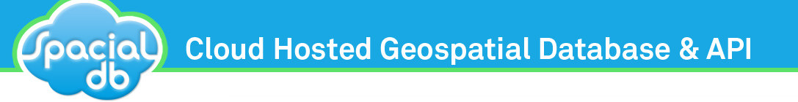

{% if page.title == 'Home' %}
{% endif %}

{{ page.sidebar }}
{{ page.title }}
{{ page.content }}
Please enable JavaScript to view the
comments powered by Disqus.
blog comments powered by
Disqus
 {% endif %}
{% endif %}